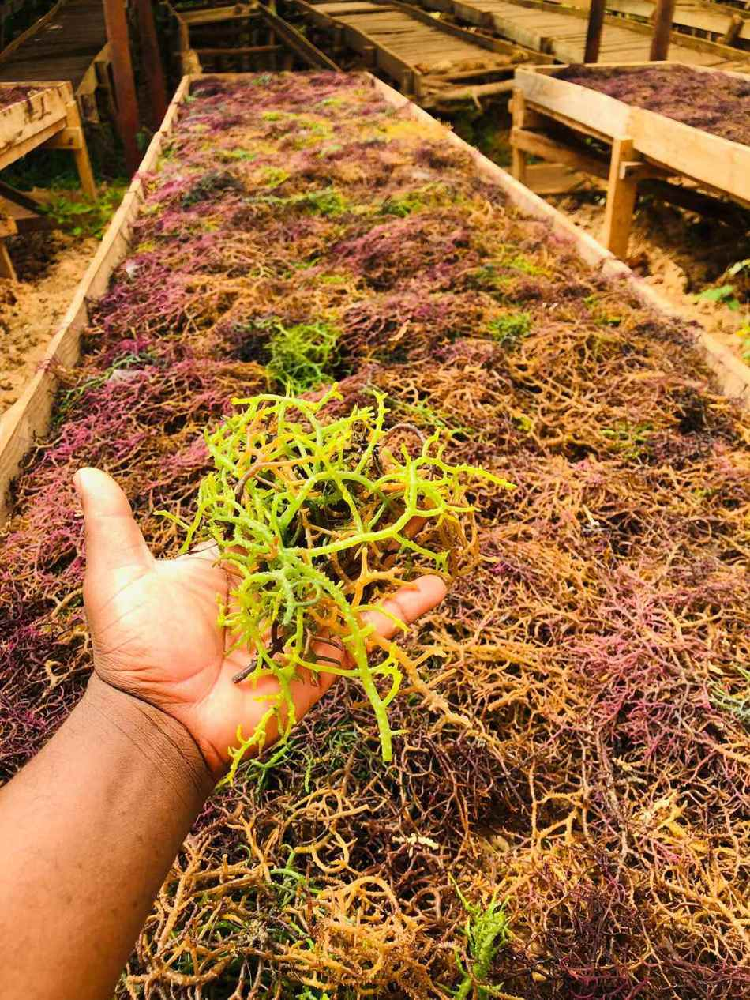
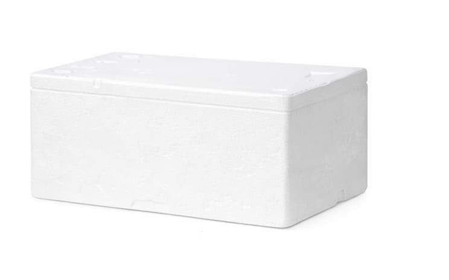

Explore authentic coastal products, discover their origins and connect with the communities behind them.
 Sea Moss3 products
Sea Moss3 products
 Coastal Honey1 product
Cosmeticsin development
Treasuresin development
Coastal Honey1 product
Cosmeticsin development
Treasuresin development
 Producersthe coast
Producersthe coast
Four products are on the shelf today. Two more collections are being built, and we would rather show you an empty shelf than a promise we cannot keep.
Grown on racks in the shallows, cut by hand, washed and sun-dried on the shore. Three forms, depending on how much work you want to do before it reaches the pot.

Washed, sorted, sun-dried golden

Natural form — rinse and soak
Ground fine — a spoonful, no soaking
In development
Dark honey from the mangrove forests of the Shimoni coast — a flavour ordinary honey cannot match, in a sealed 500g jar.

The sea moss is farmed on racks in the shallow water along this coast, cut by hand at low tide and carried up to the shore to dry in the sun. Nothing is heated and nothing is bleached — the cleaned moss goes golden because the sun does it, not a chemical.
The honey comes from hives in the mangrove forests behind Shimoni, the same stretch of water our boats fish. Mangrove blossom is what gives it the dark colour and the depth.
This is the route sea moss takes. Every step happens on this coast.
HarvestWashingSun drying
DeliverySeaweed farming on this coast is done largely by women's groups, working the racks at low tide and drying the crop on the shore. The mangrove honey comes from beekeepers working the forest behind Shimoni.
We are building proper producer profiles — names, photographs and the story of each group, published with their permission and not before. If you grow, harvest or process something on this coast and want it carried here, talk to us.
Everything on this page is on the shop page, priced by the kilo or the jar, and travels in the same sealed cooler as the fish.